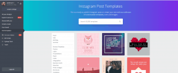
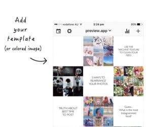
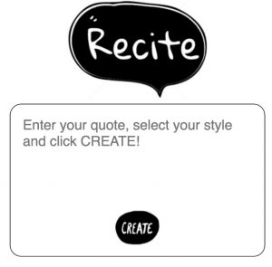
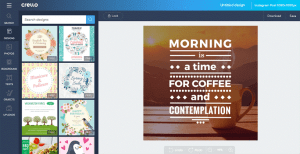

Will an Instagram post template help you to accomplish more online?
Instagram is one of the most popular marketing tools in the world today.
More than 25 million businesses rely on Instagram to share their message with the world. Why? Because it’s one of the most reliable tools for attracting new customers, enhancing engagement, and improving your chances of long-term success.
Of course, if you want to make the most of your Instagram profile, you’ll need to start with a strategic plan. The best Instagram users are those with a cohesive feed, a compelling profile, and a consistent strategy for ongoing aesthetic appeal.
If you’ve struggled with keeping your Instagram strategy on schedule up until now, then post templates for Instagram could be just what you need.
Here’s your guide to simplifying your Instagram efforts.
Why Use Post Templates for Instagram?
Instagram is an incredibly useful marketing tool.
However, like any other promotional asset, it works best when you adhere to a specific set of rules. For instance, your customers on Instagram will expect a certain consistency from you when it comes to things like:
- Posting frequency
- Content style
- Aesthetic theme
These components will help followers to grow more familiar with your brand over time, The right Instagram post creator tool or template guidelines will ensure that you don’t drift into “off-brand” territory whenever a new filter or Instagram feature emerges.
Notice how Pantone always follows a specific color-based theme with its posts.
Templates can also save you a lot of time when it comes to getting your content ready for social media. All you need to do is add your images, text, and any other essential components, and you can schedule your posts to go out according to the schedule that works best for you and your followers.
If you need to create promotional content rapidly, your template will make sure that even the most last-minute material on your Instagram channel looks professional and cohesive for your brand.
Story and Post Templates for Instagram
One other point to keep in mind before you start building your Instagram post templates is that you’ll often have a range of templates in your toolkit depending on the kind of features you use on Instagram. For instance, your basic Instagram post template will give you specific filters, borders, colors, and other aesthetic guidelines to follow when you’re designing your fundamental feed material. These templates are for the pictures that you share every day.
As you start to expand your abilities on Instagram, you may also need help with templates for your Instagram Stories too. Stories allow users to share multiple videos and photos in a single slideshow format. Although you can use some of the rules of your standard post template with this kind of content, you might need a little extra assistance too.
Don’t be alarmed if you find that you end up with a wide variety of post templates for Instagram. You may even want to create separate templates for different things. For instance, you might have one model that you use for your promotional product pictures, and an entirely different template that you use for inspirational quote posts and user-generated content. This post from Oreo in collaboration with @StillHungryForMore follows the Oreo general template, but gives the influencer room to experiment too:
https://www.instagram.com/p/BzqPnUlF5L5/?utm_source=ig_web_copy_link
With all that in mind, you’re ready to start designing your post templates for Instagram.
How to Create an Instagram Post Template with Canva
There are plenty of tools online today that are designed to help Instagram users design fantastic posts. One of our favorite options has to be “Canva.”
Canva is a graphic design app that provides easy access to plenty of useful photo editing tools, with no downloading or excess software necessary. As Instagram has grown in popularity over the years, Canva has adopted new tools to support Insta users, including Instagram post templates for stories, regular pictures, profile pictures, highlights, and more.

As a beginner-friendly graphic design solution, Canva is fantastically easy to use. All you need to do to access the post templates for Instagram is click on “Find Templates” on the Canva homepage and scroll until you find “Social Graphics.” Once you click on this option, Instagram post templates are listed as the top choice.
If you lack in inspiration, there are hundreds of models to choose from, all of which adhere to the sizing guidelines listed under Instagram’s post dimensions. Once you’ve clicked on a template, you’re free to adapt it according to your color preferences and needs. There’s even an option to add your brand logo.
The great thing about using Canva as your Instagram post creator is that all of the templates you build are automatically saved to your Canva profile. That means that you can easily access the same look time and time again, either on desktop, or via the mobile app.
How to Create an Instagram Post Template with Other Apps
If you don’t feel comfortable using Canva for your post templates – don’t panic.
There are lots of other options available online. Like many tools available for Instagram today, you might find that you need to test a few options before you find the one that works best for you.
The Preview App
One option is to create an account with the “Preview app.”

Preview is a particularly special solution for Instagram post templates because it allows you to customize your Instagram grid, as well as your day-to-day posts. The whole point of Preview is that you can easily check out what your content is going to look like before you post it. That way, if you want to create a checkerboard effect with your grid, or try out another aesthetic design, you can do so without risking the appearance of your entire profile.
As an Instagram post creator, Preview allows you to edit everything from the font on your posts to the color of your text, and the style of your images. You’ll still need to rely on Instagram for your filters, however.
Recite This
If you’re looking for an Instagram post template that will help you to design a specific type of post, then you might need to get more niche with your search for software. For instance, if you want to create quote posts as part of your content strategy, ReciteThis is a fantastic tool.
With ReciteThis, you can make your quotes appear in a wide range of different formats, perfect for delivering a highly consistent personality and theme on your Instagram page.

Even better, ReciteThis is very easy to use. With a text-box already included, all you need to do is enter the quote you want to share, select the style that you like most and hit the “Create” button.
There are plenty of beautiful templates to choose from. Once you’ve found a template that works for you, and entered your text, downloading an image onto your computer means that you can conveniently schedule your posts to appear on your Instagram profile whenever you like!
3. Instagram Creative Market
Sometimes, if you want to stand out online, then you need to be willing to invest in your social media presence. The Creative Market is an environment where you can find plenty of amazing Instagram Template bundles, designed by modern graphic designers. Here, you’ll need to pay for each of the templates you buy.
The templates are ready to use from the moment you get them, which means that even if you had to spend a little extra money on this content, you can save yourself some valuable time when it comes to building the content that resonates with your audience.
There are thousands of options to choose from, depending on the kind of aesthetic you want to create for your Instagram feed. What’s more, you can also customize the templates that you receive if they’re “close” to perfect -but not quite what you need.
4. Crello
Crello is one of the more recent Instagram post creator tools to appear on the market. It’s designed to help companies create remarkable designs for their Instagram account, without having to invest in a graphic designer. All you need to do to access the service is browse through the Crello database, choose the design that suits you, and adjust it according to your needs.
Crello can even suggest the right Instagram post template for your need depending on what you’re trying to accomplish with your social media strategy. What’s more, the application is very easy to use, so you shouldn’t have trouble getting used to it – even if you’re a beginner, or you have no experience with graphic design.

While there are paid parts of Crello, such as premium images and fonts, there are also aspects that you can use for free too.
What to Look for In Your Instagram Post Creator
As you might have noticed from our list above, there are plenty of different post templates for Instagram available online today, as well as a wide range of tools you can rely on to make your own templates. When you’re choosing the software you need for your campaigns, make sure you:
- Check that the sizing specs for the model are up-to-date and that you can download your content in the correct format for Instagram.
- Examine your customization options: You’ll want files that you can easily open and edit to suit your brand with unique color schemes and the ability to add your logo.
- Make sure you look for elements in your post creator that offer the option to add gifs, hashtags, and polls – particularly for Stories content.
- Consider the style: Although there are many templates available today, not all of them will match the unique aesthetic of your brand. Make sure that the templates you choose are consistent to the kind of experience
- Prioritise flexibility: Look for a model that gives you plenty of options for posting different types of content. This will ensure that you don’t have to stick to posting the same thing all of the time.
Finding your Unique Instagram Theme
Ultimately, the purpose of using an Instagram post template, or a range of templates for that matter, is that you end up with a more consistent and reliable Instagram feed. However, before you can even begin using an Instagram post creator, you’ll need to decide what kind of message you want to put across with your content. As you start exploring your template options, ask yourself:
- What kind of colors do I need to be prominent on my Instagram profile? These will usually be your brand colors.
- What kind of posts will I be making for Instagram? Will you be focusing exclusively on photos, or do you want to share quotes too?
- What sort of style am I going for? How do you want people to describe the images that they see from you on Instagram?
- Do I have a specific selection of filters that I want to use with my Instagram images every time I post something new?
- Do I need to add a logo to my posts, or something else that helps to identify my brand to any followers?
Remember, designing post templates for Instagram will help you to tell your social media story in a more consistent and reliable way. Over time, your consistency will help you to attract the attention of your target audience, and keep your customers coming back for more.
Don’t forget that as well as having multiple templates to choose from; you may also need to adjust your templates over time when you learn more about your target audience and the kind of material that they respond well to. Keep an eye on your Instagram Insights over time so you can adjust your campaigns going forward.
As always stay tuned to SocialFollow for more advice for your Instagram strategy.


1 Comment